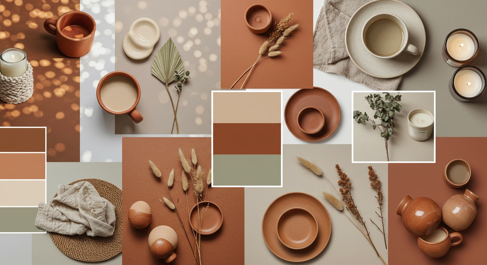
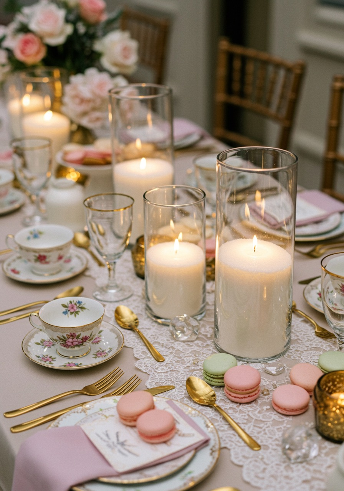
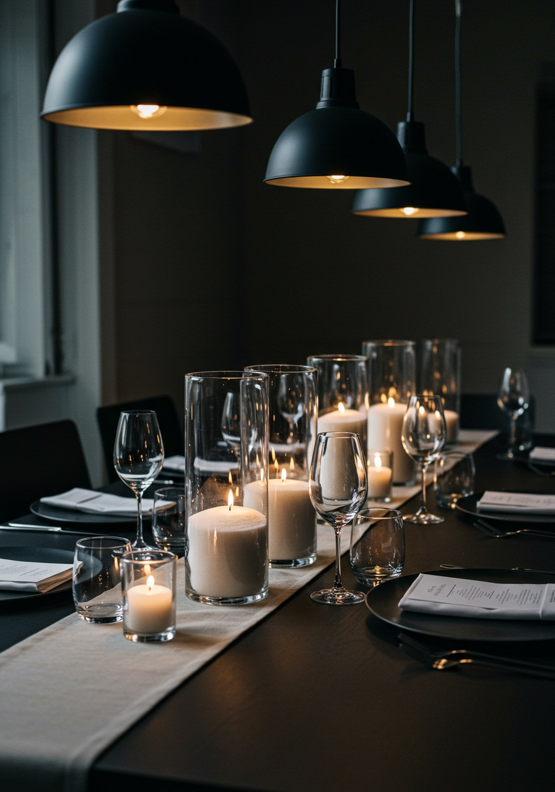

Spring 2025 Perth Wedding Trend Forecast: Colours, Textures & Lighting
August 7, 2025
Spring weddings in Perth are renowned for their magical blend of natural beauty, comfortable weather, and the vibrant rebirth of colour. As we look ahead to Spring 2025, exciting trends are emerging that offer fresh inspiration for couples planning their perfect day. At Lustre Hire, we're not just keeping an eye on these trends—we're here to help you effortlessly integrate them into your DIY wedding planning journey.
Trying to turn the inspiration into a real plan? You can check your date and get a quote here.
Colour Trends: Warm Neutrals and Expressive Palettes
This year, warm neutrals are set to replace cooler tones, bringing an inviting, romantic atmosphere to weddings. Think:
Colour Trends: Warm Neutrals and Expressive Palettes
Latte and Mocha Tones: Soft, earthy hues such as caramel, mocha, and latte are becoming the new foundation colours. They perfectly complement a rustic boho aesthetic, especially when paired with textured wooden elements.
Bold and Expressive: Couples are also embracing expressive colour palettes featuring terracotta, sage green, and even pops of burgundy or rust.

Texture Trends: Natural and Luxe
Finely Textured White Sand: Our sand wax candles are finely textured with a matte, soft appearance, offering a beautiful tactile contrast to sleek tableware or rustic table runners.
Surreal Floral Installations: Sculptural floral arrangements featuring asymmetrical designs and floating installations add both drama and sophistication.
Vintage and Luxe Details: Vintage ring boxes, antique lace, heirloom pieces, and mixed metals add visual layers.

Lighting Trends: Romantic and Cinematic
Soft Golden Glow: Central to 2025’s lighting trend is the soft, golden internal glow, easily achieved with Lustre Hire’s sand wax candles.
Cinematic Photography: Film-style photography is capturing weddings in warm tones with soft shadows and romantic ambiance.

Effortless DIY Elegance with Lustre Hire
Convenience & Sustainability: Our candles are pre-filled, ready-to-light, and housed in reusable glass sleeves.
Budget-Smart Luxury: Our pricing scales by quantity, giving you great value as your candle count grows.
Venue-Friendly Safety: Enclosed flames mean compliance and peace of mind at any venue.

Spring 2025 bookings are filling fast. Let Lustre Hire help you create a wedding that’s stylish, safe, and stress-free.
Ready to plan your styling?
Check your date, get a quote, and work out a candle setup that suits your Spring wedding look.
Check Availability